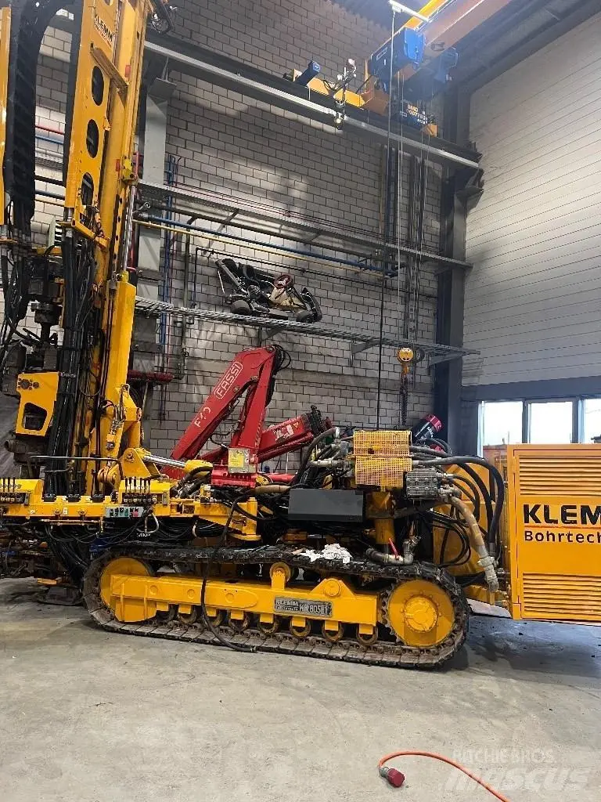

Payerne, Vaud — forage géothermique
Forage géothermique en Suisse romande, pensé pour durer.
EcoTek-Forage conçoit et fore des installations géothermiques sur mesure pour les maisons, immeubles et bâtiments commerciaux de Suisse romande — de l'étude de sol jusqu'à la mise en service.

Établie en 2024
Une entreprise suisse construite sur la précision du forage.
Chez EcoTek-Forage, nous sommes spécialisés dans le forage géothermique de précision pour les bâtiments résidentiels et commerciaux. Nous allions des décennies d'expérience cumulée à une technologie de pointe pour proposer des solutions énergétiques efficaces, durables et rentables, issues directement de la terre.
Nous ne vendons pas un trou dans le sol. Nous concevons un système de chauffage pensé pour durer cinquante ans.
- Entièrement certifiés et conformes aux normes environnementales et de sécurité suisses.
- Solutions de bout en bout : évaluation du site, forage, installation et maintenance.
- Systèmes d'ingénierie suisses optimisés pour la performance à long terme.
Applications
Où nous intervenons
Des installations géothermiques dans toute la Suisse romande, pensées pour la vie de tous les jours autant que pour l'investissement à long terme.
Maisons unifamiliales
Systèmes de forage et de pompes à chaleur sur mesure pour chauffer durablement votre espace de vie — efficaces, silencieux et quasi invisibles une fois installés.
Complexes d'appartements
Solutions géothermiques évolutives pour immeubles à logements multiples, qui réduisent les coûts de chauffage et augmentent la valeur de la propriété au fil du temps.
Bâtiments commerciaux
Chauffage géothermique fiable pour bureaux, hôtels et sites industriels, avec un entretien minimal et un retour sur investissement à long terme.
Projets de rénovation
Intégration du chauffage géothermique dans les bâtiments existants, en remplacement des systèmes au fioul ou au gaz devenus obsolètes.
Services
Du premier relevé au dernier réglage
De la consultation initiale au support après installation, un service complet mené avec la précision suisse et le souci de la responsabilité environnementale.
Évaluation du site géothermique
Études géologiques détaillées et analyse du potentiel thermique pour garantir des conditions de forage optimales.
Services de forage vertical
Équipements de pointe pour des forages profonds et précis, en minimisant l'impact en surface.
Conformité réglementaire et permis
Nous gérons l'ensemble des permis et documents nécessaires au respect de la législation environnementale suisse.
Intégration du système
Installation d'appareils géothermiques à haut rendement, adaptés au profil énergétique de votre bâtiment.
Surveillance et maintenance
Contrôles continus du système et support technique pour garantir des performances optimales toute l'année.
Notre méthode
Étape par étape, jusqu'à 300 mètres
Chaque projet suit la même méthode rigoureuse, de la surface jusqu'au fond du forage, puis retour à la surface pour l'installation.
Évaluation du site et étude de faisabilité
+Avant le début du forage, nous analysons les conditions géologiques, les besoins énergétiques et la configuration du terrain, pour garantir une efficacité optimale et le respect des réglementations locales.
- Analyse du sol et du potentiel thermique
- Planification en profondeur pour un rendement optimal
- Évaluations juridiques et environnementales (permis, zonage)
Forage
+Grâce à un équipement de pointe, nous réalisons des forages précis et profonds tout en minimisant les perturbations en surface.
- Forage vertical jusqu'à plus de 300 mètres
- Techniques sûres et respectueuses de l'environnement
- Tubage final et raccordement à la boucle de terre
Intégration et connexion de la pompe à chaleur
+Une fois le forage terminé, nous installons et raccordons le système de pompe à chaleur géothermique qui extrait et distribue l'énergie thermique du sol.
- Installation de pompes à chaleur à haut rendement
- Intégration au système de chauffage existant
- Tests et optimisation pour des performances maximales
Assistance continue et maintenance
+Nous ne nous contentons pas d'installer votre système — nous l'accompagnons dans la durée, avec un entretien minimal et des coûts énergétiques maîtrisés.
- Contrôles de performance et entretien annuel
- Support technique et assistance d'urgence
- Mises à niveau selon les besoins
Pourquoi la géothermie
Une alternative durable aux combustibles fossiles
Face à la hausse des prix de l'énergie et à la prise de conscience environnementale, le chauffage géothermique est un choix d'avenir.
Le principe physique
La terre se réchauffe naturellement avec la profondeur
C'est ce gradient géothermique — quelques degrés de plus tous les cent mètres — qui rend le forage rentable : plus profond veut dire plus de chaleur disponible, toute l'année, sans combustion.
Propre et renouvelable
L'énergie vient directement de la terre, ce qui réduit les émissions de CO₂ et protège le climat.
Faibles coûts d'exploitation
Après l'installation, ces systèmes consomment peu d'énergie et presque aucun carburant.
Haute efficacité toute l'année
La température du sol reste stable en toute saison, pour des performances de chauffage constantes.
Silencieux et invisible
Aucune unité visible ni pollution sonore — juste une énergie propre sous vos pieds.
Prêt à commencer ?
Exploitons ensemble la chaleur qui se trouve déjà sous votre terrain.
Demander une étude de siteContactez-nous
Prêt à exploiter la chaleur de votre terrain ?
Nos experts basés en Suisse proposent des solutions géothermiques complètes, du conseil et de la planification au forage de précision et à l'installation du système.
Maison individuelle, immeuble d'appartements ou bâtiment commercial — nous adaptons chaque système à vos besoins.
- Téléphone026 660 69 67
- Mobile079 962 69 67
- Emailinfo@ecotek-forage.ch
- AdresseRives de la Broye 3, 1530 Payerne
Nous répondons généralement sous 24 heures ouvrées.